🌍 나의 감성 여행 앨범
직접 걸으며 만든 발자취, 찬란한 여행의 기록.
🇪🇺 유럽 감성 기행
알프스의 장엄한 만년설과 노을빛 에펠탑 아래 깃든 사색
🇯🇵 일본 힐링 기행
바람과 정겨운 미식, 에노덴 전차 선로가 건네주는 위로
🇰🇷 국내 로컬 사색
부안 채석강의 장엄한 기암절벽 아래에서 품은 하얀 쉼
🇪🇺 유럽 감성 기행 (유라시아 대륙의 철학적 사색)
2019년, 배낭 하나만을 메고 국경을 넘으며 담아낸 유럽의 풍경입니다. 스위스의 장엄한 풍경, 파리의 낭만적인 석양, 그리고 돌바닥 틈새마다 묵직한 사색이 깃든 독일의 숲까지, 발길 닿는 곳마다 고요한 위로가 되어주었던 찬란한 순간들의 단상입니다.
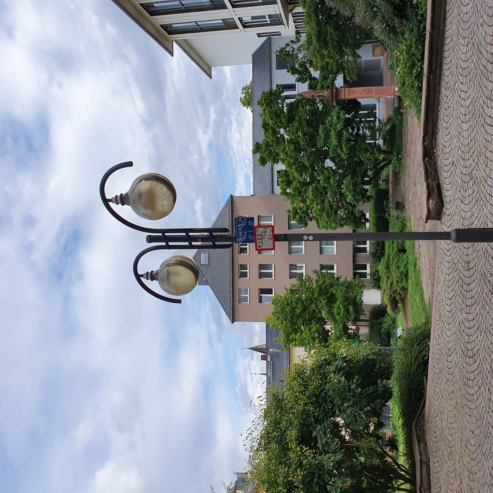
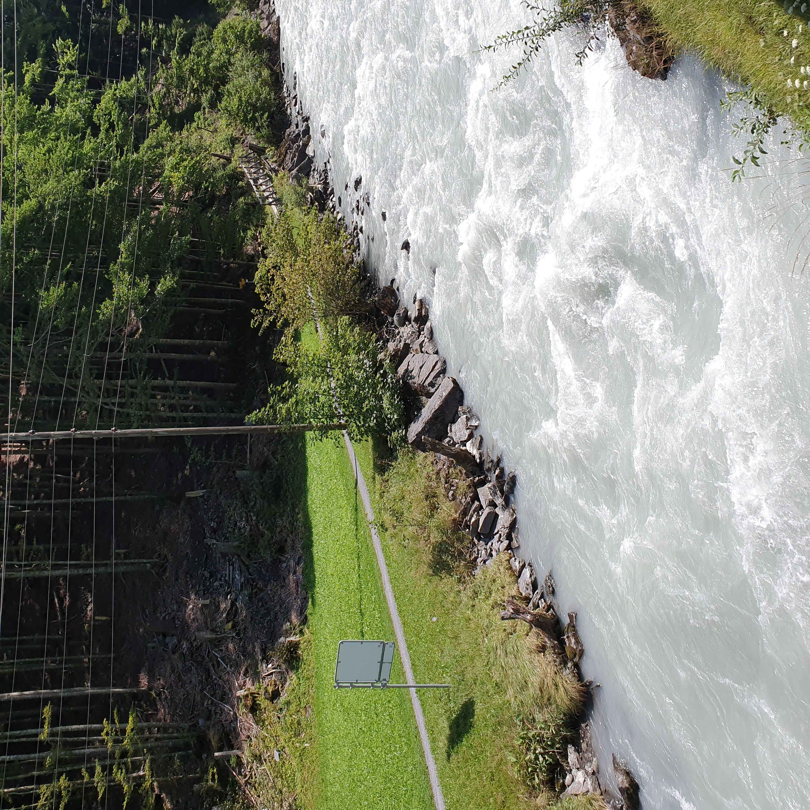
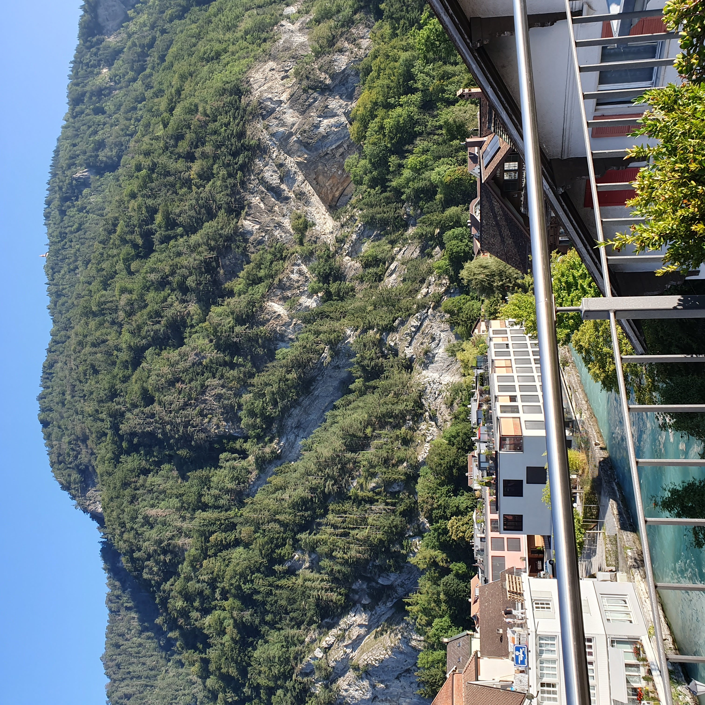
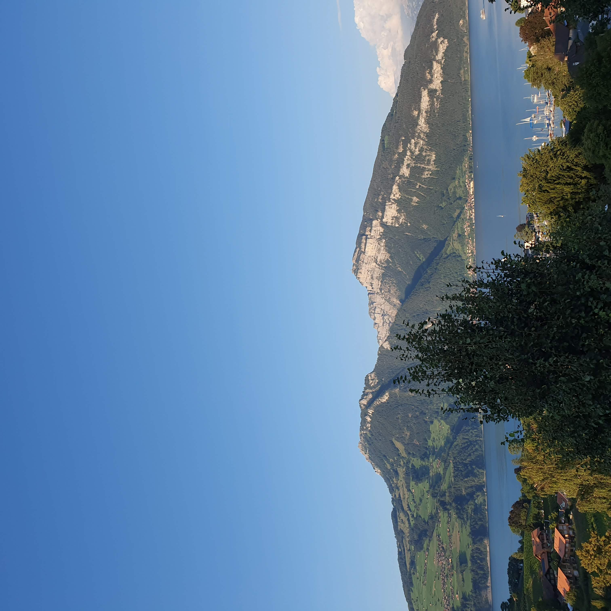
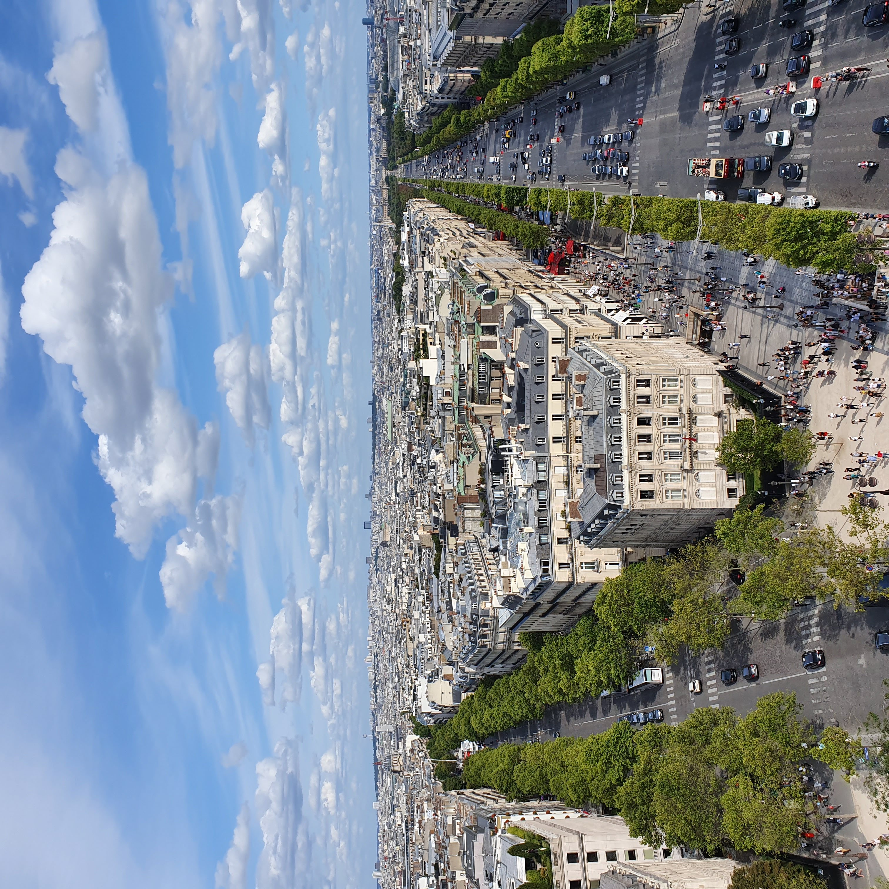
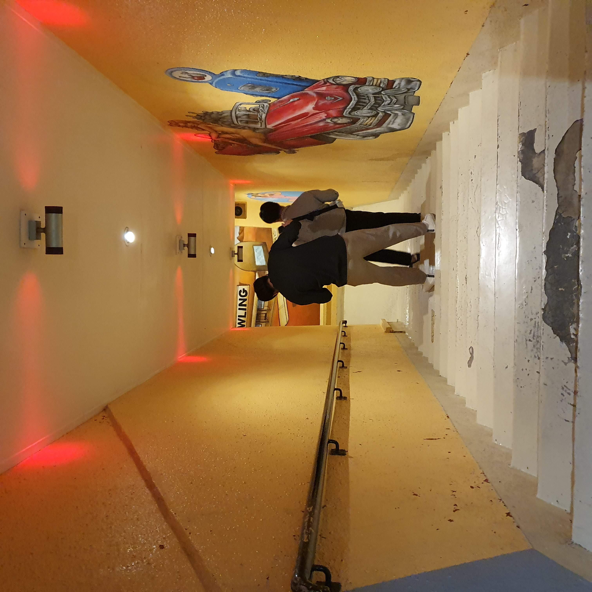
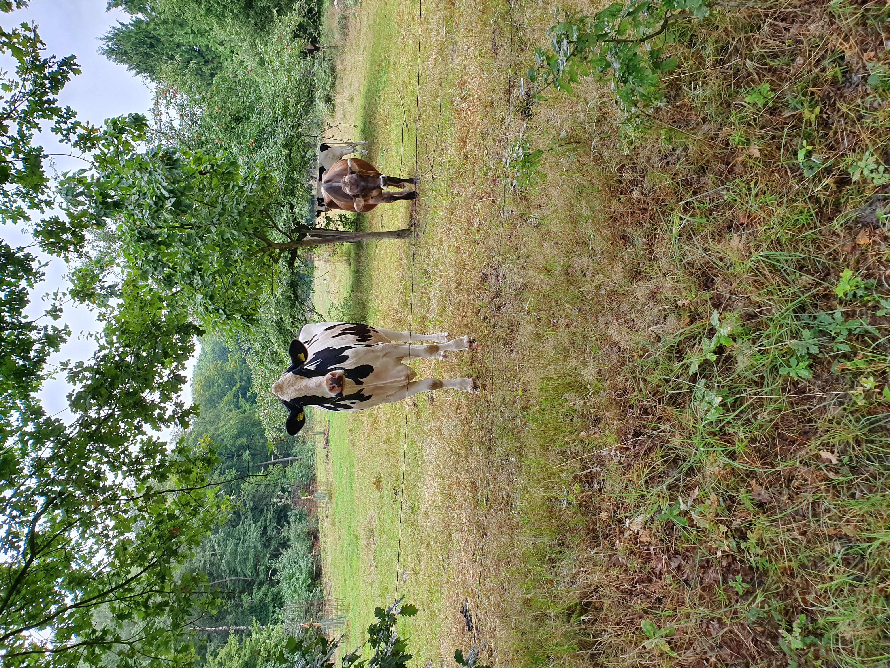
🇯🇵 일본 힐링 기행 (바람과 미식, 골목길의 영감)
바쁘게 돌아가던 일상에서 벗어나, 고요한 골목길 속 잔잔한 바람과 정겨운 미식을 통해 마음을 어루만졌던 여정입니다. 푸른 바다를 달리는 에노덴 전차의 청춘, 도톤보리의 화려한 활력, 그리고 잔잔한 나카스 강변 야타이 포장마차의 낭만까지, 아날로그 감성이 살아 숨 쉬는 소소한 조각들입니다.
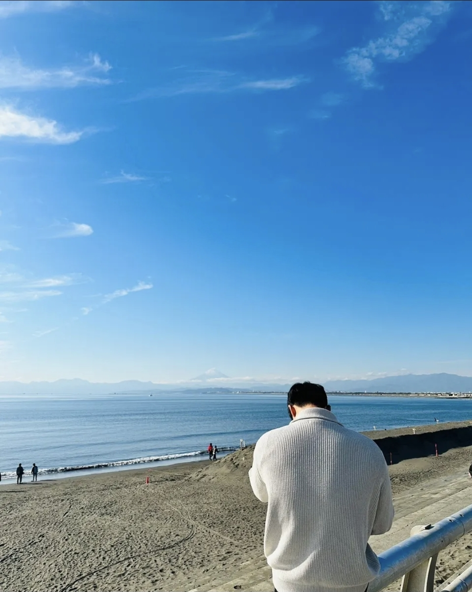
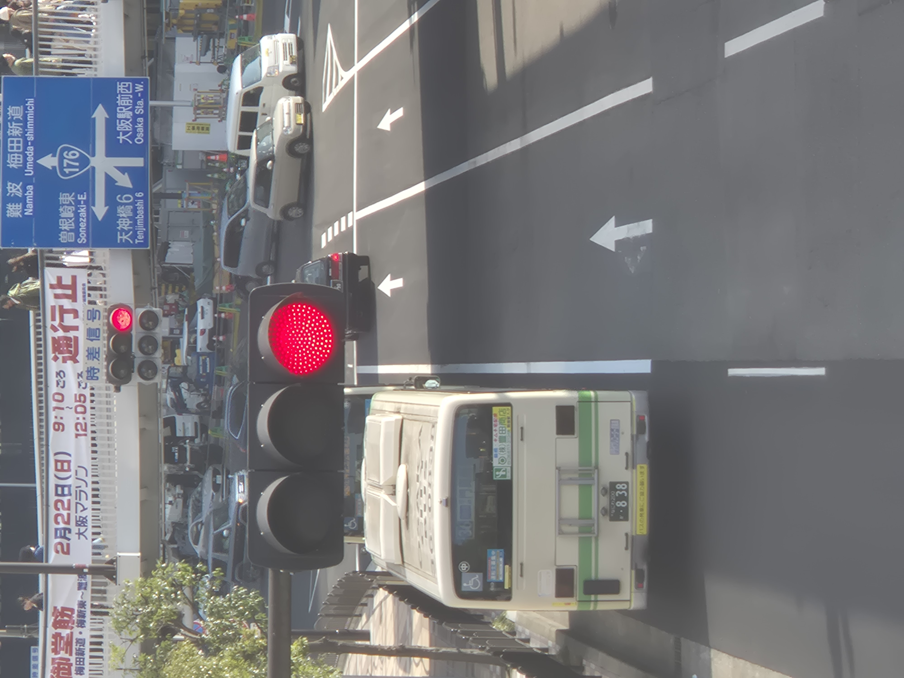
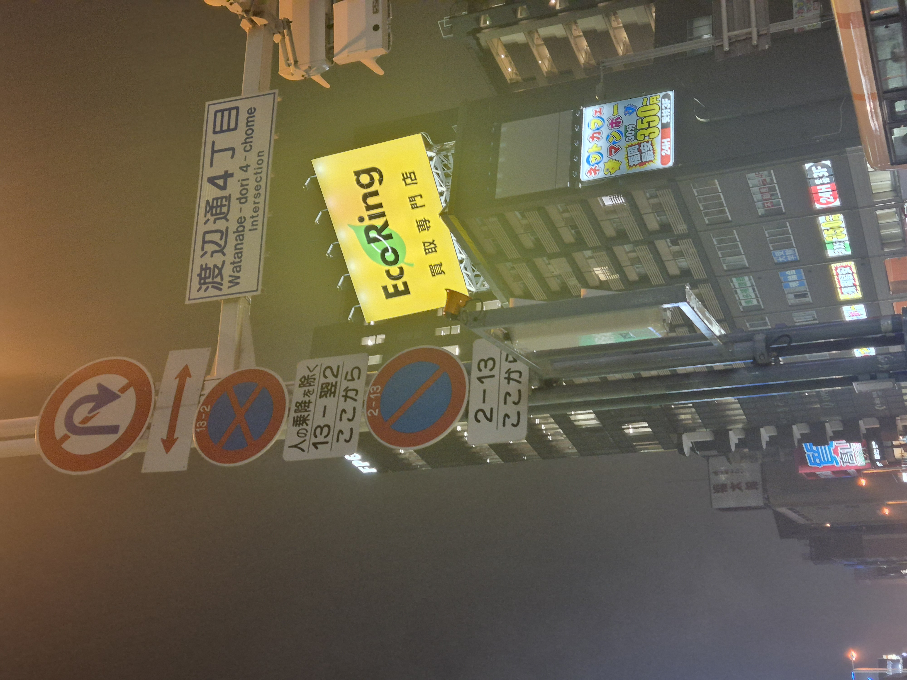
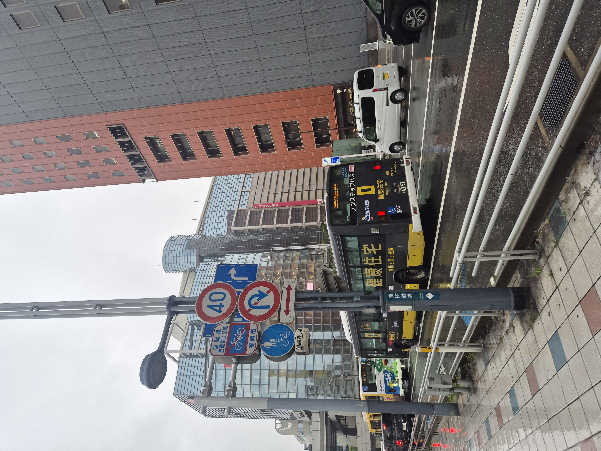
🇰🇷 국내 로컬 사색 (숨 고르기와 온전한 쉼)
머릿속이 복잡해질 때마다 찾아 떠났던, 푸른 서해와 장엄한 기암괴석이 펼쳐진 부안 채석강의 여정입니다. 수만 권의 책을 차곡차곡 쌓아 올린 듯한 기묘한 절벽 아래에서 가만히 밀려오는 하얀 파도 소리를 듣고 있으면, 어지럽게 흩어져 있던 생각들이 제자리를 찾으며 새로운 힘을 얻곤 합니다.